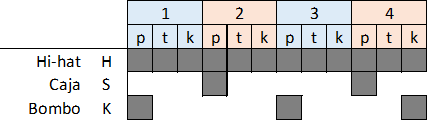
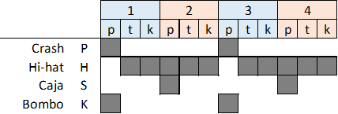
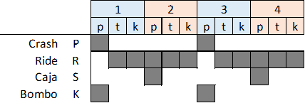
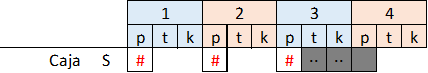

Intro: (Silencio: 2)
Estrofa 1: (R1: 6)
Estrofa 1: (R1: 4)(R1-p: 1)(Br: 1)
Estrofa 1: (R1: 4)(R1-p: 2)
Estrofa 2: (R1: 2)(R1-pr: 4)
Estrofa 2: (R1: 2)(R1-pr: 4)
Puente: (R1-pr: 2)(R1: 7)(Br: 1)
Parte 2: (R1: 7)(Br: 1) (x5)
(Silencio: 2)
Intro
(R1: 6)
Mil quinientos veintiuno y en abril para más señas
en Villalar ajustician quienes justicia pidieran.
Al que luchó por el pueblo y perdió tan justa guerra.
(R1: 4)
Ser inmigrante en tu tierra, y llegó la democracia,
y a Castilla la dividen, la marginan y la engañan.
(R1-p: 1) (Br: 1)
Separan todos sus pueblos y les niegan cuna y casa.
(R1: 4)
Triste Castilla ignorada, cruel castigo a su hazaña,
defendida por truhanes, cuatro Sanchos y esa espada.
(R1-p: 2)
de hidalgos y caballeros que nos sirven ni a su dama.
(R1: 2)
El poder és el que importa, no importen les persones,
(R1-pr: 4)
Castellá de genolls, aprén catala, i renúncia a la teva terra.
Castellá de genolls, aprén catala, i renúncia a la teva terra.
(R1: 2)
Gastelak euskera ikasten dute.
(R1-pr: 4)
Ahaztu nor zaren eta nondik zatozen.
Ahaztu nor zaren eta nondik zatozen.
(R1-pr: 2)(R1: 7)(Br: 1)
Puente
(Sol-Sim-Re-La) (x5) (Mi-Mi7) (stop)
(R1: 7)(Br: 1) (x5)
Quién sabe si las cigüeñas han de volver por San Blas,
si las heladas de marzo los brotes se han de llevar.
Si las llamas comuneras otra vez crepitarán,
cuanto más vieja es la yesca, más fácil se prenderá.
Si los pinares ardieron aún nos queda el encinar
y, aunque nos rompan o vendan, Castilla resistirá.
Lara la, la la, lara la larala larala la.
Lara la, la la, lara la larala larala la.